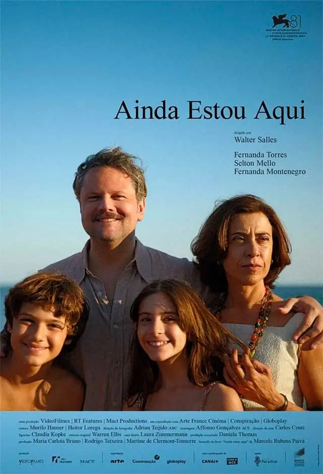

No início da década de 1970, o Brasil enfrenta o endurecimento da ditadura militar. No Rio de Janeiro, a família Paiva, formada pelo casal Rubens e Eunice e seus cinco filhos, vive à beira da praia em uma casa de portas abertas para os amigos. Um dia, Rubens é levado por militares à paisana e desaparece. Sua esposa é então obrigada a se reinventar e traçar um novo futuro para si e seus filhos enquanto tenta descobrir a verdade sobre o destino do marido, uma busca que se estenderia por décadas.
• Lançamento: 7 de novembro de 2024 (Brasil)
• Direção: Walter Salles
• Roteiro: baseado no livro de Marcelo Rubens Paiva
• Duração: 135 minutos
• O filme é baseado no livro autobiográfico de Marcelo Rubens Paiva, que relata a história de sua família durante a ditadura militar no Brasil.
• A atriz Fernanda Torres venceu o Globo de Ouro de Melhor Atriz e foi indicada ao Oscar na mesma categoria, enquanto o filme conquistou o prêmio de Melhor Filme Internacional, marcando um feito histórico para o cinema brasileiro.
• Marca o retorno de Walter Salles ao cinema brasileiro após anos trabalhando fora do país, gerando grande expectativa no cenário nacional e internacional.